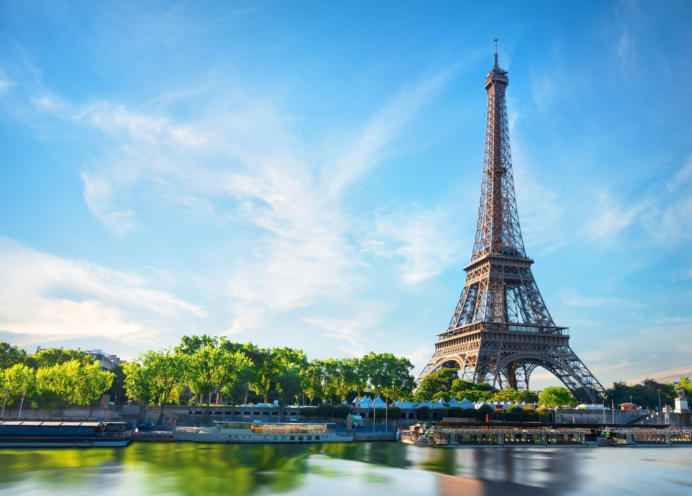

Pariz
Pariz poznat kao "Grad svetlosti", glavni je grad Francuske i svetski centar mode, umetnosti i gastronomije. Eifelov toranj, Luvr i Katedrala Notr Dam samo su neke od njegovih ikoničnih atrakcija. Grad ima prepoznatljiv šarm zbog svojih romantičnih ulica, kafića i mostova preko Sene. Pariz je takođe poznat po bogatom kulturnom životu, sa brojnim festivalima, galerijama i koncertima.